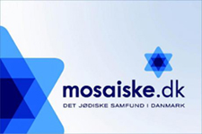
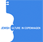

Knowledge
Lectures and themed evenings on Israeli society, history, religion, language and the present — for specialists and the simply curious.
The Danish-Israeli Association (DIF) in Aarhus is one of several regional associations in Denmark, working for friendship between Israel and Denmark — and sharing knowledge of Israeli society, Jewish culture and the Hebrew language through lectures and events.
Most of DIF's members are ordinary people who care about Israel — the land itself, the Jewish people, religion, the Hebrew language, music, Israeli literature, cuisine, art, history. Some have travelled in Israel; others lived in a kibbutz; and yet others are mixed Danish-Israeli married couples.
Lectures and themed evenings on Israeli society, history, religion, language and the present — for specialists and the simply curious.
Films, Israeli literature, Hebrew music, Jewish holidays and shared meals — culture as a bridge between people.
Conversations about the Middle East at eye level — against antisemitism, and for a lasting friendship between two democracies.
DIF heightens knowledge among Danes about Israel and Jewish culture and provides information about the situation in Israel, the Jews in Israel, and the overall conditions in the Middle East as we see it. We do not interfere with political affairs as such; our work is inspired by the following four principles.
We seek to strengthen cultural relationships between Israel and Denmark, as well as everyday personal ties between people in the two countries.
We believe in Israel's right to exist as the homeland of the Jewish people.
We work for the recognition of Israel's right to peace and security.
We support and encourage humanitarian initiatives for the benefit of Israel's population.
As long as deep in the heart,
the soul of a Jew yearns,
and towards the East,
an eye looks to Zion —
our hope is not yet lost,
the hope of two thousand years,
to be a free people in our land,
the land of Zion and Jerusalem.
כָּל עוֹד בַּלֵּבָב פְּנִימָה
נֶפֶשׁ יְהוּדִי הוֹמִיָּה,
וּלְפַאֲתֵי מִזְרָח קָדִימָה,
עַיִן לְצִיּוֹן צוֹפִיָּה —
עוֹד לֹא אָבְדָה תִּקְוָתֵנוּ,
הַתִּקְוָה בַּת שְׁנוֹת אַלְפַּיִם,
לִהְיוֹת עַם חָפְשִׁי בְּאַרְצֵנוּ,
אֶרֶץ צִיּוֹן וִירוּשָׁלָיִם.
Anyone who adheres to the purpose and program of DIF can become a member, provided they are not a member of another organisation whose aims contradict ours. The membership year runs from 1 July to 30 June.
DIF is a member of the United Danish Committee for Israel, which includes most Jewish and Israel friendship organisations in Denmark. We co-ordinate with the Jewish-Israeli community of Aarhus to mark traditions such as Passover and Chanukah.

